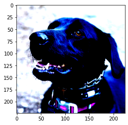
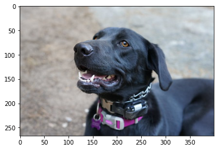

<!DOCTYPE html>

<html lang="en">
  <head>
    <meta charset="utf-8" />
    <meta name="viewport" content="width=device-width, initial-scale=1.0" /><meta name="generator" content="Docutils 0.17.1: http://docutils.sourceforge.net/" />

    <title>Convert a PaddlePaddle Model to ONNX and OpenVINO IR &#8212; OpenVINO™  documentation</title>
    
    
  <link href="../_static/css/theme.css" rel="stylesheet">
  <link href="../_static/css/index.ff1ffe594081f20da1ef19478df9384b.css" rel="stylesheet">

    
  <link rel="stylesheet"
    href="../_static/vendor/fontawesome/5.13.0/css/all.min.css">
  <link rel="preload" as="font" type="font/woff2" crossorigin
    href="../_static/vendor/fontawesome/5.13.0/webfonts/fa-solid-900.woff2">
  <link rel="preload" as="font" type="font/woff2" crossorigin
    href="../_static/vendor/fontawesome/5.13.0/webfonts/fa-brands-400.woff2">

    
      

    
    <link rel="stylesheet" type="text/css" href="../_static/pygments.css" />
    <link rel="stylesheet" type="text/css" href="../_static/css/blank.css" />
    <link rel="stylesheet" type="text/css" href="../_static/tabs.css" />
    <link rel="stylesheet" type="text/css" href="../_static/copybutton.css" />
    <link rel="stylesheet" type="text/css" href="../_static/mystnb.css" />
    <link rel="stylesheet" type="text/css" href="../_static/togglebutton.css" />
    <link rel="stylesheet" type="text/css" href="../_static/panels-main.c949a650a448cc0ae9fd3441c0e17fb0.css" />
    <link rel="stylesheet" type="text/css" href="../_static/panels-variables.06eb56fa6e07937060861dad626602ad.css" />
    <link rel="stylesheet" type="text/css" href="../_static/doxyrest-pygments.css" />
    
  <link rel="preload" as="script" href="../_static/js/index.be7d3bbb2ef33a8344ce.js">

    <link href="../_static/css/media/favicon.ico" rel="shortcut icon">
    <link rel="stylesheet" href="../_static/css/openvino_sphinx_theme.css" type="text/css" />
    <link rel="stylesheet" href="../_static/css/button.css" type="text/css" />
    <link rel="stylesheet" href="../_static/css/input.css" type="text/css" />
    <link rel="stylesheet" href="../_static/css/textfield.css" type="text/css" />
    <link rel="stylesheet" href="../_static/css/tabs.css" type="text/css" />
    <script src="../_static/js/openvino_sphinx_theme.js"></script>
    <link rel="stylesheet" href="../_static/css/viewer.min.css" type="text/css" />
    <link rel="stylesheet" href="../_static/css/custom.css" type="text/css" />

    <script src="https://cdn.jsdelivr.net/npm/chart.js@2.9.3/dist/Chart.min.js"></script>
    <script src="https://cdn.jsdelivr.net/npm/chartjs-plugin-datalabels"></script>
    <script src="https://cdnjs.cloudflare.com/ajax/libs/chartjs-plugin-annotation/0.5.7/chartjs-plugin-annotation.min.js"></script>
    <script src="https://cdn.jsdelivr.net/npm/chartjs-plugin-barchart-background@1.3.0/build/Plugin.Barchart.Background.min.js"></script>
    <script src="https://cdn.jsdelivr.net/npm/chartjs-plugin-deferred@1"></script>
    <script src="https://cdnjs.cloudflare.com/ajax/libs/PapaParse/5.3.1/papaparse.min.js"></script>
    <script src="../_static/js/viewer.min.js"></script>
    <script src="/assets/versions_raw.js"></script>

    <script data-url_root="../" id="documentation_options" src="../_static/documentation_options.js"></script>
    <script src="../_static/jquery.js"></script>
    <script src="../_static/underscore.js"></script>
    <script src="../_static/doctools.js"></script>
    <script src="../_static/tabs.js"></script>
    <script src="../_static/clipboard.min.js"></script>
    <script src="../_static/copybutton.js"></script>
    <script src="../_static/js/custom.js"></script>
    <script src="../_static/js/graphs.js"></script>
    <script src="../_static/js/graphs_ov_tf.js"></script>
    <script>let toggleHintShow = 'Click to show';</script>
    <script>let toggleHintHide = 'Click to hide';</script>
    <script>let toggleOpenOnPrint = 'true';</script>
    <script src="../_static/togglebutton.js"></script>
    <script src="../_static/target-highlight.js"></script>
    <script>var togglebuttonSelector = '.toggle, .admonition.dropdown, .tag_hide_input div.cell_input, .tag_hide-input div.cell_input, .tag_hide_output div.cell_output, .tag_hide-output div.cell_output, .tag_hide_cell.cell, .tag_hide-cell.cell';</script>
    <link rel="canonical" href="https://docs.openvino.ai/latest/notebooks/103-paddle-onnx-to-openvino-classification-with-output.html" />
    <link rel="shortcut icon" href="../_static/favicon.ico"/>
    <link rel="index" title="Index" href="../genindex.html" />
    <link rel="search" title="Search" href="../search.html" />
    <link rel="next" title="Working with Open Model Zoo Models" href="104-model-tools-with-output.html" />
    <link rel="prev" title="Convert a PyTorch Model to ONNX and OpenVINO IR" href="102-pytorch-onnx-to-openvino-with-output.html" />
    <meta name="viewport" content="width=device-width, initial-scale=1" />
    <meta name="docsearch:language" content="en">
    

    <!-- Google Analytics -->
    
  </head>
  <body data-spy="scroll" data-target="#bd-toc-nav" data-offset="80">
    
    <div class="container-fluid" id="banner"></div>

    
      <nav class="navbar navbar-light navbar-expand-lg bg-light fixed-top bd-navbar" id="navbar-main"><div class="container-xl">

  <div id="navbar-start">
    
    

<a class="navbar-brand" href="../index.html">
  
</a>


    
  </div>

  <button class="navbar-toggler" type="button" data-toggle="collapse" data-target="#navbar-collapsible" aria-controls="navbar-collapsible" aria-expanded="false" aria-label="Toggle navigation">
    <span class="navbar-toggler-icon"></span>
  </button>

  
  <div id="navbar-collapsible" class="col-lg-9 collapse navbar-collapse">
    <div id="navbar-center" class="mr-auto">
      
      <div class="navbar-center-item">
        <ul id="navbar-main-elements" class="navbar-nav">
    <li class="toctree-l1 nav-item">
 <a class="reference internal nav-link" href="../pages/documentation.html">
  Documentation
 </a>
</li>

<li class="toctree-l1 nav-item">
 <a class="reference internal nav-link" href="../tutorials.html">
  Tutorials
 </a>
</li>

<li class="toctree-l1 nav-item">
 <a class="reference internal nav-link" href="../api/api_reference.html">
  API Reference
 </a>
</li>

<li class="toctree-l1 nav-item">
 <a class="reference internal nav-link" href="../model_zoo.html">
  Model Zoo
 </a>
</li>

<li class="toctree-l1 nav-item">
 <a class="reference internal nav-link" href="../pages/resources.html">
  Resources
 </a>
</li>

    
</ul>
      </div>
      
    </div>

    <div id="navbar-end">
      
      <div class="navbar-end-item">
        <ul id="navbar-icon-links" class="navbar-nav" aria-label="Icon Links">
        <li class="nav-item">
          <a class="nav-link" href="https://github.com/openvinotoolkit/openvino" rel="noopener" target="_blank" title="GitHub">
            <span><i class="sst-github"></i></span>
            <label class="sr-only">GitHub</label>
          </a>
        </li>
</ul>
      </div>
      
      <div class="navbar-end-item">
        
<div class="dropdown sst-dropdown sst-dropdown-navbar">
  <button class="btn sst-btn dropdown-toggle" type="button" id="version-selector" data-toggle="dropdown" aria-haspopup="true" aria-expanded="false"></button>
  <div class="dropdown-menu" aria-labelledby="version-selector">
  </div>
</div>
      </div>
      
      <div class="navbar-end-item">
        

<div class="dropdown sst-dropdown sst-dropdown-navbar">
  <button class="btn sst-btn dropdown-toggle" type="button" id="language-selector" data-toggle="dropdown" aria-haspopup="true" aria-expanded="false">English</button>
  <div class="dropdown-menu" aria-labelledby="language-selector">
    
      
        <a class="dropdown-item font-weight-bold" href="/latest/notebooks/103-paddle-onnx-to-openvino-classification-with-output.html">English</a>
      
    
      
        <a  class="dropdown-item" href="/cn/latest/notebooks/103-paddle-onnx-to-openvino-classification-with-output.html">Chinese</a>
      
    
  </div>
</div>

      </div>
      
    </div>
  </div>
</div>
        <div id="collapse-nav-wrapper" class="container-xl">
          <button id="collapse-nav" class="button bttn-prm button-size-m" type="button" data-toggle="collapse" data-target="#nav-tree" aria-expanded="false" aria-controls="nav-tree">
            Documentation navigation <i class="fas fa-chevron-down"></i>
          </button>
        </div>
      </nav>
      <div class="transition-banner container-fluid alert alert-info alert-dismissible fade show" role="alert">
        <p>OpenVINO 2022.1 introduces a new version of OpenVINO API (API 2.0). For more information on the changes and transition steps, see the <a href="https://docs.openvino.ai/latest/openvino_2_0_transition_guide.html">transition guide</a></p>
        <button type="button" class="close" data-dismiss="alert" aria-label="Close">
          <span aria-hidden="true">&times;</span>
        </button>
    </div>
    

    <div class="container-xl">
      <div class="row">
          
            
            <!-- Only show if we have sidebars configured, else just a small margin  -->
            <div class="col-12 col-md-3 bd-sidebar" id="nav-tree"><form class="searchForm bd-search d-flex align-items-center" action="../search.html" method="get">
    <i class="icon fas fa-search"></i>
    <input type="search" class="form-control" name="query" id="search-input" placeholder="Search the docs ..." aria-label="Search the docs ..." autocomplete="off" >
</form><nav class="bd-links" id="bd-docs-nav" aria-label="Main navigation">
  <div class="bd-toc-item active">
    <ul class="nav bd-sidenav">
 <li class="toctree-l1">
  <a class="reference internal" href="001-hello-world-with-output.html">
   Hello Image Classification
  </a>
 </li>
 <li class="toctree-l1">
  <a class="reference internal" href="002-openvino-api-with-output.html">
   OpenVINO API Tutorial
  </a>
 </li>
 <li class="toctree-l1">
  <a class="reference internal" href="003-hello-segmentation-with-output.html">
   Hello Image Segmentation
  </a>
 </li>
 <li class="toctree-l1">
  <a class="reference internal" href="004-hello-detection-with-output.html">
   Hello Object Detection
  </a>
 </li>
</ul>
<ul class="current nav bd-sidenav">
 <li class="toctree-l1">
  <a class="reference internal" href="101-tensorflow-to-openvino-with-output.html">
   Convert a TensorFlow Model to OpenVINO
  </a>
 </li>
 <li class="toctree-l1">
  <a class="reference internal" href="102-pytorch-onnx-to-openvino-with-output.html">
   Convert a PyTorch Model to ONNX and OpenVINO IR
  </a>
 </li>
 <li class="toctree-l1 current active">
  <a class="current reference internal" href="#">
   Convert a PaddlePaddle Model to ONNX and OpenVINO IR
  </a>
 </li>
 <li class="toctree-l1">
  <a class="reference internal" href="104-model-tools-with-output.html">
   Working with Open Model Zoo Models
  </a>
 </li>
 <li class="toctree-l1">
  <a class="reference internal" href="105-language-quantize-bert-with-output.html">
   Quantize NLP models with OpenVINO Post-Training Optimization Tool ​
  </a>
 </li>
 <li class="toctree-l1">
  <a class="reference internal" href="106-auto-device-with-output.html">
   Automatic Device Selection with OpenVINO™
  </a>
 </li>
 <li class="toctree-l1">
  <a class="reference internal" href="110-ct-segmentation-quantize-with-output.html">
   Quantize a Segmentation Model and Show Live Inference
  </a>
 </li>
 <li class="toctree-l1">
  <a class="reference internal" href="111-detection-quantization-with-output.html">
   Object Detection Quantization
  </a>
 </li>
 <li class="toctree-l1">
  <a class="reference internal" href="112-pytorch-post-training-quantization-nncf-with-output.html">
   Post-Training Quantization of PyTorch models with NNCF
  </a>
 </li>
 <li class="toctree-l1">
  <a class="reference internal" href="113-image-classification-quantization-with-output.html">
   Quantization of Image Classification Models
  </a>
 </li>
 <li class="toctree-l1">
  <a class="reference internal" href="114-quantization-simplified-mode-with-output.html">
   INT8 Quantization with Post-training Optimization Tool (POT) in Simplified Mode tutorial
  </a>
 </li>
</ul>
<ul class="nav bd-sidenav">
 <li class="toctree-l1">
  <a class="reference internal" href="201-vision-monodepth-with-output.html">
   Monodepth Estimation with OpenVINO
  </a>
 </li>
 <li class="toctree-l1">
  <a class="reference internal" href="202-vision-superresolution-image-with-output.html">
   Single Image Super Resolution with OpenVINO
  </a>
 </li>
 <li class="toctree-l1">
  <a class="reference internal" href="202-vision-superresolution-video-with-output.html">
   Video Super Resolution with OpenVINO
  </a>
 </li>
 <li class="toctree-l1">
  <a class="reference internal" href="205-vision-background-removal-with-output.html">
   Image Background Removal with U^2-Net and OpenVINO
  </a>
 </li>
 <li class="toctree-l1">
  <a class="reference internal" href="206-vision-paddlegan-anime-with-output.html">
   Photos to Anime with PaddleGAN and OpenVINO
  </a>
 </li>
 <li class="toctree-l1">
  <a class="reference internal" href="207-vision-paddlegan-superresolution-with-output.html">
   Super Resolution with PaddleGAN and OpenVINO
  </a>
 </li>
 <li class="toctree-l1">
  <a class="reference internal" href="208-optical-character-recognition-with-output.html">
   Optical Character Recognition (OCR) with OpenVINO
  </a>
 </li>
 <li class="toctree-l1">
  <a class="reference internal" href="209-handwritten-ocr-with-output.html">
   Handwritten Chinese and Japanese OCR
  </a>
 </li>
 <li class="toctree-l1">
  <a class="reference internal" href="210-ct-scan-live-inference-with-output.html">
   Live Inference and Benchmark CT-scan Data with OpenVINO
  </a>
 </li>
 <li class="toctree-l1">
  <a class="reference internal" href="211-speech-to-text-with-output.html">
   Speech to Text with OpenVINO
  </a>
 </li>
 <li class="toctree-l1">
  <a class="reference internal" href="212-onnx-style-transfer-with-output.html">
   Style Transfer on ONNX Models with OpenVINO
  </a>
 </li>
 <li class="toctree-l1">
  <a class="reference internal" href="213-question-answering-with-output.html">
   Interactive question answering with OpenVINO
  </a>
 </li>
 <li class="toctree-l1">
  <a class="reference internal" href="214-vision-paddle-classification-with-output.html">
   PaddlePaddle Image Classification with OpenVINO
  </a>
 </li>
 <li class="toctree-l1">
  <a class="reference internal" href="215-image-inpainting-with-output.html">
   Image In-painting with OpenVINO™
  </a>
 </li>
 <li class="toctree-l1">
  <a class="reference internal" href="217-vision-deblur-with-output.html">
   Deblur Photos with DeblurGAN-v2 and OpenVINO
  </a>
 </li>
 <li class="toctree-l1">
  <a class="reference internal" href="218-vehicle-detection-and-recognition-with-output.html">
   Vehicle Detection And Recognition with OpenVINO
  </a>
 </li>
</ul>
<ul class="nav bd-sidenav">
 <li class="toctree-l1">
  <a class="reference internal" href="301-tensorflow-training-openvino-with-output.html">
   From Training to Deployment with TensorFlow and OpenVINO
  </a>
 </li>
 <li class="toctree-l1">
  <a class="reference internal" href="301-tensorflow-training-openvino-pot-with-output.html">
   Post-Training Quantization with TensorFlow Classification Model
  </a>
 </li>
 <li class="toctree-l1">
  <a class="reference internal" href="302-pytorch-quantization-aware-training-with-output.html">
   Quantization Aware Training with NNCF, using PyTorch framework
  </a>
 </li>
 <li class="toctree-l1">
  <a class="reference internal" href="305-tensorflow-quantization-aware-training-with-output.html">
   Quantization Aware Training with NNCF, using TensorFlow Framework
  </a>
 </li>
</ul>
<ul class="nav bd-sidenav">
 <li class="toctree-l1">
  <a class="reference internal" href="401-object-detection-with-output.html">
   Live Object Detection with OpenVINO
  </a>
 </li>
 <li class="toctree-l1">
  <a class="reference internal" href="402-pose-estimation-with-output.html">
   Live Human Pose Estimation with OpenVINO
  </a>
 </li>
 <li class="toctree-l1">
  <a class="reference internal" href="403-action-recognition-webcam-with-output.html">
   Human Action Recognition with OpenVINO
  </a>
 </li>
 <li class="toctree-l1">
  <a class="reference internal" href="405-paddle-ocr-webcam-with-output.html">
   PaddleOCR with OpenVINO
  </a>
 </li>
</ul>

  </div>
</nav>
            </div>
            
          

          
          <div class="d-none d-xl-block col-xl-2 bd-toc">
            
              
              <div class="toc-item">
                
<div class="tocsection onthispage pt-5 pb-3">
    <i class="fas fa-list"></i> On this page
</div>

<nav id="bd-toc-nav">
    <ul class="visible nav section-nav flex-column">
 <li class="toc-h2 nav-item toc-entry">
  <a class="reference internal nav-link" href="#preparation">
   Preparation
  </a>
  <ul class="nav section-nav flex-column">
   <li class="toc-h3 nav-item toc-entry">
    <a class="reference internal nav-link" href="#imports">
     Imports
    </a>
   </li>
   <li class="toc-h3 nav-item toc-entry">
    <a class="reference internal nav-link" href="#settings">
     Settings
    </a>
   </li>
  </ul>
 </li>
 <li class="toc-h2 nav-item toc-entry">
  <a class="reference internal nav-link" href="#show-inference-on-paddlepaddle-model">
   Show Inference on PaddlePaddle Model
  </a>
 </li>
 <li class="toc-h2 nav-item toc-entry">
  <a class="reference internal nav-link" href="#convert-the-model-to-openvino-ir-format">
   Convert the Model to OpenVINO IR Format
  </a>
  <ul class="nav section-nav flex-column">
   <li class="toc-h3 nav-item toc-entry">
    <a class="reference internal nav-link" href="#id1">
     Preparation
    </a>
   </li>
   <li class="toc-h3 nav-item toc-entry">
    <a class="reference internal nav-link" href="#convert-paddlepaddle-model-to-onnx">
     Convert PaddlePaddle Model to ONNX
    </a>
   </li>
   <li class="toc-h3 nav-item toc-entry">
    <a class="reference internal nav-link" href="#convert-onnx-model-to-openvino-ir-format">
     Convert ONNX model to OpenVINO IR Format
    </a>
   </li>
  </ul>
 </li>
 <li class="toc-h2 nav-item toc-entry">
  <a class="reference internal nav-link" href="#show-inference-on-openvino-model">
   Show Inference on OpenVINO Model
  </a>
 </li>
 <li class="toc-h2 nav-item toc-entry">
  <a class="reference internal nav-link" href="#timing-and-comparison">
   Timing and Comparison
  </a>
 </li>
</ul>

</nav>
              </div>
              
              <div class="toc-item">
                <div class="tocsection download-docs">
  <div class="dropdown sst-dropdown">
    <button class="button bttn-prm button-size-m" data-display="static" type="button" id="download-options"
      data-toggle="dropdown" aria-haspopup="true" aria-expanded="false">
      Download Docs
    </button>
    <div class="dropdown-menu" aria-labelledby="download-options">
      <a class="dropdown-item" href="#" onclick="window.print()">.pdf</a>
      <a id="download-zip-btn" class="dropdown-item" href="#">.zip</a>
    </div>
  </div>
</div>
              </div>
              
            
          </div>
          

          
          
              
          
          <main class="col-12 col-md-9 col-xl-7 py-md-5 pl-md-5 pr-md-4 bd-content" role="main">

<div class="tocsection editthispage">
    <a href="None">
        <i class="fas fa-pencil-alt"></i> Edit this page
    </a>
</div>

            
                <div>
                  
  <section id="convert-a-paddlepaddle-model-to-onnx-and-openvino-ir">
<h1>Convert a PaddlePaddle Model to ONNX and OpenVINO IR<a class="headerlink" href="#convert-a-paddlepaddle-model-to-onnx-and-openvino-ir" title="Permalink to this headline">¶</a></h1>
<p>This notebook shows how to convert a MobileNetV3 model from
<a class="reference external" href="https://github.com/PaddlePaddle/PaddleHub">PaddleHub</a>, pretrained on
the <a class="reference external" href="https://www.image-net.org">ImageNet</a> dataset, to OpenVINO IR. It
also shows how to perform classification inference on a sample image
using OpenVINO’s <a class="reference external" href="https://docs.openvino.ai/latest/openvino_docs_IE_DG_Deep_Learning_Inference_Engine_DevGuide.html">Inference
Engine</a>
and compares the results of the
<a class="reference external" href="https://github.com/PaddlePaddle/Paddle">PaddlePaddle</a> model with the
IR model.</p>
<p>Source of the
<a class="reference external" href="https://www.paddlepaddle.org.cn/hubdetail?name=mobilenet_v3_large_imagenet_ssld&amp;en_category=ImageClassification">model</a>.</p>
<section id="preparation">
<h2>Preparation<a class="headerlink" href="#preparation" title="Permalink to this headline">¶</a></h2>
<section id="imports">
<h3>Imports<a class="headerlink" href="#imports" title="Permalink to this headline">¶</a></h3>
<div class="highlight-ipython3 notranslate"><div class="highlight"><pre><span></span><span class="kn">import</span> <span class="nn">os</span>
<span class="kn">import</span> <span class="nn">time</span>

<span class="kn">import</span> <span class="nn">cv2</span>
<span class="kn">import</span> <span class="nn">matplotlib.pyplot</span> <span class="k">as</span> <span class="nn">plt</span>
<span class="kn">import</span> <span class="nn">numpy</span> <span class="k">as</span> <span class="nn">np</span>
<span class="kn">import</span> <span class="nn">paddlehub</span> <span class="k">as</span> <span class="nn">hub</span>
<span class="kn">from</span> <span class="nn">IPython.display</span> <span class="kn">import</span> <span class="n">Markdown</span><span class="p">,</span> <span class="n">display</span>
<span class="kn">from</span> <span class="nn">PIL</span> <span class="kn">import</span> <span class="n">Image</span>
<span class="kn">from</span> <span class="nn">openvino.runtime</span> <span class="kn">import</span> <span class="n">Core</span>
<span class="kn">from</span> <span class="nn">paddle.static</span> <span class="kn">import</span> <span class="n">InputSpec</span>
<span class="kn">from</span> <span class="nn">scipy.special</span> <span class="kn">import</span> <span class="n">softmax</span>
</pre></div>
</div>
<div class="highlight-default notranslate"><div class="highlight"><pre><span></span><span class="o">/</span><span class="n">opt</span><span class="o">/</span><span class="n">hostedtoolcache</span><span class="o">/</span><span class="n">Python</span><span class="o">/</span><span class="mf">3.8.12</span><span class="o">/</span><span class="n">x64</span><span class="o">/</span><span class="n">lib</span><span class="o">/</span><span class="n">python3</span><span class="mf">.8</span><span class="o">/</span><span class="n">site</span><span class="o">-</span><span class="n">packages</span><span class="o">/</span><span class="n">paddle</span><span class="o">/</span><span class="n">vision</span><span class="o">/</span><span class="n">transforms</span><span class="o">/</span><span class="n">functional_pil</span><span class="o">.</span><span class="n">py</span><span class="p">:</span><span class="mi">36</span><span class="p">:</span> <span class="ne">DeprecationWarning</span><span class="p">:</span> <span class="n">NEAREST</span> <span class="ow">is</span> <span class="n">deprecated</span> <span class="ow">and</span> <span class="n">will</span> <span class="n">be</span> <span class="n">removed</span> <span class="ow">in</span> <span class="n">Pillow</span> <span class="mi">10</span> <span class="p">(</span><span class="mi">2023</span><span class="o">-</span><span class="mi">07</span><span class="o">-</span><span class="mi">01</span><span class="p">)</span><span class="o">.</span> <span class="n">Use</span> <span class="n">Resampling</span><span class="o">.</span><span class="n">NEAREST</span> <span class="ow">or</span> <span class="n">Dither</span><span class="o">.</span><span class="n">NONE</span> <span class="n">instead</span><span class="o">.</span>
  <span class="s1">&#39;nearest&#39;</span><span class="p">:</span> <span class="n">Image</span><span class="o">.</span><span class="n">NEAREST</span><span class="p">,</span>
<span class="o">/</span><span class="n">opt</span><span class="o">/</span><span class="n">hostedtoolcache</span><span class="o">/</span><span class="n">Python</span><span class="o">/</span><span class="mf">3.8.12</span><span class="o">/</span><span class="n">x64</span><span class="o">/</span><span class="n">lib</span><span class="o">/</span><span class="n">python3</span><span class="mf">.8</span><span class="o">/</span><span class="n">site</span><span class="o">-</span><span class="n">packages</span><span class="o">/</span><span class="n">paddle</span><span class="o">/</span><span class="n">vision</span><span class="o">/</span><span class="n">transforms</span><span class="o">/</span><span class="n">functional_pil</span><span class="o">.</span><span class="n">py</span><span class="p">:</span><span class="mi">37</span><span class="p">:</span> <span class="ne">DeprecationWarning</span><span class="p">:</span> <span class="n">BILINEAR</span> <span class="ow">is</span> <span class="n">deprecated</span> <span class="ow">and</span> <span class="n">will</span> <span class="n">be</span> <span class="n">removed</span> <span class="ow">in</span> <span class="n">Pillow</span> <span class="mi">10</span> <span class="p">(</span><span class="mi">2023</span><span class="o">-</span><span class="mi">07</span><span class="o">-</span><span class="mi">01</span><span class="p">)</span><span class="o">.</span> <span class="n">Use</span> <span class="n">Resampling</span><span class="o">.</span><span class="n">BILINEAR</span> <span class="n">instead</span><span class="o">.</span>
  <span class="s1">&#39;bilinear&#39;</span><span class="p">:</span> <span class="n">Image</span><span class="o">.</span><span class="n">BILINEAR</span><span class="p">,</span>
<span class="o">/</span><span class="n">opt</span><span class="o">/</span><span class="n">hostedtoolcache</span><span class="o">/</span><span class="n">Python</span><span class="o">/</span><span class="mf">3.8.12</span><span class="o">/</span><span class="n">x64</span><span class="o">/</span><span class="n">lib</span><span class="o">/</span><span class="n">python3</span><span class="mf">.8</span><span class="o">/</span><span class="n">site</span><span class="o">-</span><span class="n">packages</span><span class="o">/</span><span class="n">paddle</span><span class="o">/</span><span class="n">vision</span><span class="o">/</span><span class="n">transforms</span><span class="o">/</span><span class="n">functional_pil</span><span class="o">.</span><span class="n">py</span><span class="p">:</span><span class="mi">38</span><span class="p">:</span> <span class="ne">DeprecationWarning</span><span class="p">:</span> <span class="n">BICUBIC</span> <span class="ow">is</span> <span class="n">deprecated</span> <span class="ow">and</span> <span class="n">will</span> <span class="n">be</span> <span class="n">removed</span> <span class="ow">in</span> <span class="n">Pillow</span> <span class="mi">10</span> <span class="p">(</span><span class="mi">2023</span><span class="o">-</span><span class="mi">07</span><span class="o">-</span><span class="mi">01</span><span class="p">)</span><span class="o">.</span> <span class="n">Use</span> <span class="n">Resampling</span><span class="o">.</span><span class="n">BICUBIC</span> <span class="n">instead</span><span class="o">.</span>
  <span class="s1">&#39;bicubic&#39;</span><span class="p">:</span> <span class="n">Image</span><span class="o">.</span><span class="n">BICUBIC</span><span class="p">,</span>
<span class="o">/</span><span class="n">opt</span><span class="o">/</span><span class="n">hostedtoolcache</span><span class="o">/</span><span class="n">Python</span><span class="o">/</span><span class="mf">3.8.12</span><span class="o">/</span><span class="n">x64</span><span class="o">/</span><span class="n">lib</span><span class="o">/</span><span class="n">python3</span><span class="mf">.8</span><span class="o">/</span><span class="n">site</span><span class="o">-</span><span class="n">packages</span><span class="o">/</span><span class="n">paddle</span><span class="o">/</span><span class="n">vision</span><span class="o">/</span><span class="n">transforms</span><span class="o">/</span><span class="n">functional_pil</span><span class="o">.</span><span class="n">py</span><span class="p">:</span><span class="mi">39</span><span class="p">:</span> <span class="ne">DeprecationWarning</span><span class="p">:</span> <span class="n">BOX</span> <span class="ow">is</span> <span class="n">deprecated</span> <span class="ow">and</span> <span class="n">will</span> <span class="n">be</span> <span class="n">removed</span> <span class="ow">in</span> <span class="n">Pillow</span> <span class="mi">10</span> <span class="p">(</span><span class="mi">2023</span><span class="o">-</span><span class="mi">07</span><span class="o">-</span><span class="mi">01</span><span class="p">)</span><span class="o">.</span> <span class="n">Use</span> <span class="n">Resampling</span><span class="o">.</span><span class="n">BOX</span> <span class="n">instead</span><span class="o">.</span>
  <span class="s1">&#39;box&#39;</span><span class="p">:</span> <span class="n">Image</span><span class="o">.</span><span class="n">BOX</span><span class="p">,</span>
<span class="o">/</span><span class="n">opt</span><span class="o">/</span><span class="n">hostedtoolcache</span><span class="o">/</span><span class="n">Python</span><span class="o">/</span><span class="mf">3.8.12</span><span class="o">/</span><span class="n">x64</span><span class="o">/</span><span class="n">lib</span><span class="o">/</span><span class="n">python3</span><span class="mf">.8</span><span class="o">/</span><span class="n">site</span><span class="o">-</span><span class="n">packages</span><span class="o">/</span><span class="n">paddle</span><span class="o">/</span><span class="n">vision</span><span class="o">/</span><span class="n">transforms</span><span class="o">/</span><span class="n">functional_pil</span><span class="o">.</span><span class="n">py</span><span class="p">:</span><span class="mi">40</span><span class="p">:</span> <span class="ne">DeprecationWarning</span><span class="p">:</span> <span class="n">LANCZOS</span> <span class="ow">is</span> <span class="n">deprecated</span> <span class="ow">and</span> <span class="n">will</span> <span class="n">be</span> <span class="n">removed</span> <span class="ow">in</span> <span class="n">Pillow</span> <span class="mi">10</span> <span class="p">(</span><span class="mi">2023</span><span class="o">-</span><span class="mi">07</span><span class="o">-</span><span class="mi">01</span><span class="p">)</span><span class="o">.</span> <span class="n">Use</span> <span class="n">Resampling</span><span class="o">.</span><span class="n">LANCZOS</span> <span class="n">instead</span><span class="o">.</span>
  <span class="s1">&#39;lanczos&#39;</span><span class="p">:</span> <span class="n">Image</span><span class="o">.</span><span class="n">LANCZOS</span><span class="p">,</span>
<span class="o">/</span><span class="n">opt</span><span class="o">/</span><span class="n">hostedtoolcache</span><span class="o">/</span><span class="n">Python</span><span class="o">/</span><span class="mf">3.8.12</span><span class="o">/</span><span class="n">x64</span><span class="o">/</span><span class="n">lib</span><span class="o">/</span><span class="n">python3</span><span class="mf">.8</span><span class="o">/</span><span class="n">site</span><span class="o">-</span><span class="n">packages</span><span class="o">/</span><span class="n">paddle</span><span class="o">/</span><span class="n">vision</span><span class="o">/</span><span class="n">transforms</span><span class="o">/</span><span class="n">functional_pil</span><span class="o">.</span><span class="n">py</span><span class="p">:</span><span class="mi">41</span><span class="p">:</span> <span class="ne">DeprecationWarning</span><span class="p">:</span> <span class="n">HAMMING</span> <span class="ow">is</span> <span class="n">deprecated</span> <span class="ow">and</span> <span class="n">will</span> <span class="n">be</span> <span class="n">removed</span> <span class="ow">in</span> <span class="n">Pillow</span> <span class="mi">10</span> <span class="p">(</span><span class="mi">2023</span><span class="o">-</span><span class="mi">07</span><span class="o">-</span><span class="mi">01</span><span class="p">)</span><span class="o">.</span> <span class="n">Use</span> <span class="n">Resampling</span><span class="o">.</span><span class="n">HAMMING</span> <span class="n">instead</span><span class="o">.</span>
  <span class="s1">&#39;hamming&#39;</span><span class="p">:</span> <span class="n">Image</span><span class="o">.</span><span class="n">HAMMING</span>
</pre></div>
</div>
</section>
<section id="settings">
<h3>Settings<a class="headerlink" href="#settings" title="Permalink to this headline">¶</a></h3>
<p>Set <code class="docutils literal notranslate"><span class="pre">IMAGE_FILENAME</span></code> to the filename of an image to use. Set
<code class="docutils literal notranslate"><span class="pre">MODEL_NAME</span></code> to the PaddlePaddle model to download from PaddleHub.
<code class="docutils literal notranslate"><span class="pre">MODEL_NAME</span></code> will also be the base name for the converted ONNX and IR
models. The notebook is tested with the
<a class="reference external" href="https://www.paddlepaddle.org.cn/hubdetail?name=mobilenet_v3_large_imagenet_ssld&amp;en_category=ImageClassification">mobilenet_v3_large_imagenet_ssld</a>
model. Other models may use different preprocessing methods and
therefore require some modification to get the same results on the
original and converted model.</p>
<p><code class="docutils literal notranslate"><span class="pre">hub.config.server</span></code> is the URL to the PaddleHub server. You should not
need to modify this setting.</p>
<div class="highlight-ipython3 notranslate"><div class="highlight"><pre><span></span><span class="n">IMAGE_FILENAME</span> <span class="o">=</span> <span class="s2">&quot;coco_close.png&quot;</span>

<span class="n">MODEL_NAME</span> <span class="o">=</span> <span class="s2">&quot;mobilenet_v3_large_imagenet_ssld&quot;</span>
<span class="n">hub</span><span class="o">.</span><span class="n">config</span><span class="o">.</span><span class="n">server</span> <span class="o">=</span> <span class="s2">&quot;https://paddlepaddle.org.cn/paddlehub&quot;</span>
</pre></div>
</div>
</section>
</section>
<section id="show-inference-on-paddlepaddle-model">
<h2>Show Inference on PaddlePaddle Model<a class="headerlink" href="#show-inference-on-paddlepaddle-model" title="Permalink to this headline">¶</a></h2>
<p>In the next cell, we load and download the model from PaddleHub, read
and display an image, do inference on that image, and show the top three
prediction results.</p>
<p>The first time you run this notebook, the PaddlePaddle model is
downloaded from PaddleHub. This may take a while.</p>
<div class="highlight-ipython3 notranslate"><div class="highlight"><pre><span></span><span class="n">classifier</span> <span class="o">=</span> <span class="n">hub</span><span class="o">.</span><span class="n">Module</span><span class="p">(</span><span class="n">name</span><span class="o">=</span><span class="n">MODEL_NAME</span><span class="p">)</span>

<span class="c1"># Load image in BGR format, as specified in model documentation</span>
<span class="n">image</span> <span class="o">=</span> <span class="n">cv2</span><span class="o">.</span><span class="n">imread</span><span class="p">(</span><span class="n">filename</span><span class="o">=</span><span class="n">IMAGE_FILENAME</span><span class="p">)</span>
<span class="n">plt</span><span class="o">.</span><span class="n">imshow</span><span class="p">(</span><span class="n">cv2</span><span class="o">.</span><span class="n">cvtColor</span><span class="p">(</span><span class="n">image</span><span class="p">,</span> <span class="n">cv2</span><span class="o">.</span><span class="n">COLOR_BGR2RGB</span><span class="p">))</span>
<span class="n">result</span> <span class="o">=</span> <span class="n">classifier</span><span class="o">.</span><span class="n">classification</span><span class="p">(</span><span class="n">images</span><span class="o">=</span><span class="p">[</span><span class="n">image</span><span class="p">],</span> <span class="n">top_k</span><span class="o">=</span><span class="mi">3</span><span class="p">)</span>
<span class="k">for</span> <span class="n">class_name</span><span class="p">,</span> <span class="n">softmax_probability</span> <span class="ow">in</span> <span class="n">result</span><span class="p">[</span><span class="mi">0</span><span class="p">]</span><span class="o">.</span><span class="n">items</span><span class="p">():</span>
    <span class="nb">print</span><span class="p">(</span><span class="sa">f</span><span class="s2">&quot;</span><span class="si">{</span><span class="n">class_name</span><span class="si">}</span><span class="s2">, </span><span class="si">{</span><span class="n">softmax_probability</span><span class="si">:</span><span class="s2">.5f</span><span class="si">}</span><span class="s2">&quot;</span><span class="p">)</span>
</pre></div>
</div>
<div class="highlight-default notranslate"><div class="highlight"><pre><span></span>[2022-05-31 15:32:45,778] [ WARNING] - The _initialize method in HubModule will soon be deprecated, you can use the __init__() to handle the initialization of the object
</pre></div>
</div>
<div class="highlight-default notranslate"><div class="highlight"><pre><span></span><span class="n">Labrador</span> <span class="n">retriever</span><span class="p">,</span> <span class="mf">0.58936</span>
<span class="n">flat</span><span class="o">-</span><span class="n">coated</span> <span class="n">retriever</span><span class="p">,</span> <span class="mf">0.03327</span>
<span class="n">curly</span><span class="o">-</span><span class="n">coated</span> <span class="n">retriever</span><span class="p">,</span> <span class="mf">0.03317</span>
</pre></div>
</div>

<p><code class="docutils literal notranslate"><span class="pre">classifier.classification()</span></code> takes an image as input and returns the
class name of the image. By default the best network result is returned.
With the <code class="docutils literal notranslate"><span class="pre">top_k</span></code> parameter, the best <code class="docutils literal notranslate"><span class="pre">k</span></code> results are returned, where
<code class="docutils literal notranslate"><span class="pre">k</span></code> is a number. Preprocessing the image and converting the network
result to class names is done behind the scenes. The classification
model returns an array with floating point values for each of the 1000
ImageNet classes. The higher the value, the more confident the network
is that the class number corresponding to that value (the index of that
value in the network output array) is the class number for the image.
The <code class="docutils literal notranslate"><span class="pre">classification()</span></code> function converts these numbers to class names
and <a class="reference external" href="https://en.wikipedia.org/wiki/Softmax_function">softmax</a>
probabilities.</p>
<p>To see PaddlePaddle’s implementation for the classification function and
for loading and preprocessing data, uncomment the next two cells.</p>
<div class="highlight-ipython3 notranslate"><div class="highlight"><pre><span></span><span class="c1"># classifier??</span>
</pre></div>
</div>
<div class="highlight-ipython3 notranslate"><div class="highlight"><pre><span></span><span class="c1"># import mobilenet_v3_large_imagenet_ssld.data_feed</span>
<span class="c1"># %load $mobilenet_v3_large_imagenet_ssld.data_feed.__file__</span>
</pre></div>
</div>
<p>The <code class="docutils literal notranslate"><span class="pre">data_feed</span></code> module shows that images are normalized, resized and
cropped and that the BGR image is converted to RGB before propagating
through the network. In the next cell, we import the <code class="docutils literal notranslate"><span class="pre">process_image</span></code>
function that is defined in this file to do inference on the OpenVINO IR
model with the same method.</p>
<div class="highlight-ipython3 notranslate"><div class="highlight"><pre><span></span><span class="kn">from</span> <span class="nn">mobilenet_v3_large_imagenet_ssld.data_feed</span> <span class="kn">import</span> <span class="n">process_image</span>
</pre></div>
</div>
<p>It is useful to show the output of the <code class="docutils literal notranslate"><span class="pre">process_image()</span></code> function, to
see the effect of cropping and resizing. Because of the normalization,
the colors will look strange, and matplotlib will warn about clipping
values.</p>
<div class="highlight-ipython3 notranslate"><div class="highlight"><pre><span></span><span class="n">pil_image</span> <span class="o">=</span> <span class="n">Image</span><span class="o">.</span><span class="n">open</span><span class="p">(</span><span class="n">IMAGE_FILENAME</span><span class="p">)</span>
<span class="n">processed_image</span> <span class="o">=</span> <span class="n">process_image</span><span class="p">(</span><span class="n">pil_image</span><span class="p">)</span>
<span class="nb">print</span><span class="p">(</span><span class="sa">f</span><span class="s2">&quot;Processed image shape: </span><span class="si">{</span><span class="n">processed_image</span><span class="o">.</span><span class="n">shape</span><span class="si">}</span><span class="s2">&quot;</span><span class="p">)</span>
<span class="c1"># Processed image is in (C,H,W) format, convert to (H,W,C) to show the image</span>
<span class="n">plt</span><span class="o">.</span><span class="n">imshow</span><span class="p">(</span><span class="n">np</span><span class="o">.</span><span class="n">transpose</span><span class="p">(</span><span class="n">processed_image</span><span class="p">,</span> <span class="p">(</span><span class="mi">1</span><span class="p">,</span> <span class="mi">2</span><span class="p">,</span> <span class="mi">0</span><span class="p">)))</span>
</pre></div>
</div>
<div class="highlight-default notranslate"><div class="highlight"><pre><span></span><span class="n">Processed</span> <span class="n">image</span> <span class="n">shape</span><span class="p">:</span> <span class="p">(</span><span class="mi">3</span><span class="p">,</span> <span class="mi">224</span><span class="p">,</span> <span class="mi">224</span><span class="p">)</span>
</pre></div>
</div>
<div class="highlight-default notranslate"><div class="highlight"><pre><span></span><span class="n">Clipping</span> <span class="nb">input</span> <span class="n">data</span> <span class="n">to</span> <span class="n">the</span> <span class="n">valid</span> <span class="nb">range</span> <span class="k">for</span> <span class="n">imshow</span> <span class="k">with</span> <span class="n">RGB</span> <span class="n">data</span> <span class="p">([</span><span class="mf">0..1</span><span class="p">]</span> <span class="k">for</span> <span class="n">floats</span> <span class="ow">or</span> <span class="p">[</span><span class="mf">0..255</span><span class="p">]</span> <span class="k">for</span> <span class="n">integers</span><span class="p">)</span><span class="o">.</span>
</pre></div>
</div>
<div class="highlight-default notranslate"><div class="highlight"><pre><span></span><span class="o">&lt;</span><span class="n">matplotlib</span><span class="o">.</span><span class="n">image</span><span class="o">.</span><span class="n">AxesImage</span> <span class="n">at</span> <span class="mh">0x7fe8d8b07430</span><span class="o">&gt;</span>
</pre></div>
</div>

</section>
<section id="convert-the-model-to-openvino-ir-format">
<h2>Convert the Model to OpenVINO IR Format<a class="headerlink" href="#convert-the-model-to-openvino-ir-format" title="Permalink to this headline">¶</a></h2>
<p>To Convert the PaddlePaddle model to IR, we first convert the model to
ONNX, and then convert the ONNX model to IR.</p>
<section id="id1">
<h3>Preparation<a class="headerlink" href="#id1" title="Permalink to this headline">¶</a></h3>
<p>PaddlePaddle’s MobileNet model contains information about the input
shape, mean and scale values that we can use to convert the model. The
next cell shows how to get these values.</p>
<div class="highlight-ipython3 notranslate"><div class="highlight"><pre><span></span><span class="n">input_shape</span> <span class="o">=</span> <span class="nb">list</span><span class="p">(</span><span class="n">classifier</span><span class="o">.</span><span class="n">cpu_predictor</span><span class="o">.</span><span class="n">get_input_tensor_shape</span><span class="p">()</span><span class="o">.</span><span class="n">values</span><span class="p">())</span>
<span class="nb">print</span><span class="p">(</span><span class="s2">&quot;input shape:&quot;</span><span class="p">,</span> <span class="n">input_shape</span><span class="p">)</span>
<span class="nb">print</span><span class="p">(</span><span class="s2">&quot;mean:&quot;</span><span class="p">,</span> <span class="n">classifier</span><span class="o">.</span><span class="n">get_pretrained_images_mean</span><span class="p">())</span>
<span class="nb">print</span><span class="p">(</span><span class="s2">&quot;std:&quot;</span><span class="p">,</span> <span class="n">classifier</span><span class="o">.</span><span class="n">get_pretrained_images_std</span><span class="p">())</span>
</pre></div>
</div>
<div class="highlight-default notranslate"><div class="highlight"><pre><span></span><span class="nb">input</span> <span class="n">shape</span><span class="p">:</span> <span class="p">[[</span><span class="o">-</span><span class="mi">1</span><span class="p">,</span> <span class="mi">3</span><span class="p">,</span> <span class="mi">224</span><span class="p">,</span> <span class="mi">224</span><span class="p">]]</span>
<span class="n">mean</span><span class="p">:</span> <span class="p">[[</span><span class="mf">0.485</span> <span class="mf">0.456</span> <span class="mf">0.406</span><span class="p">]]</span>
<span class="n">std</span><span class="p">:</span> <span class="p">[[</span><span class="mf">0.229</span> <span class="mf">0.224</span> <span class="mf">0.225</span><span class="p">]]</span>
</pre></div>
</div>
</section>
<section id="convert-paddlepaddle-model-to-onnx">
<h3>Convert PaddlePaddle Model to ONNX<a class="headerlink" href="#convert-paddlepaddle-model-to-onnx" title="Permalink to this headline">¶</a></h3>
<p>We convert the PaddlePaddle Model to ONNX with the
<code class="docutils literal notranslate"><span class="pre">.export_onnx_model()</span></code> method. This uses
<a class="reference external" href="https://github.com/PaddlePaddle/paddle2onnx">Paddle2ONNX</a>. We
convert the model with the input shape found in the previous cell.</p>
<div class="highlight-ipython3 notranslate"><div class="highlight"><pre><span></span><span class="n">target_height</span><span class="p">,</span> <span class="n">target_width</span> <span class="o">=</span> <span class="nb">next</span><span class="p">(</span><span class="nb">iter</span><span class="p">(</span><span class="n">input_shape</span><span class="p">))[</span><span class="mi">2</span><span class="p">:]</span>
<span class="n">x_spec</span> <span class="o">=</span> <span class="n">InputSpec</span><span class="p">([</span><span class="mi">1</span><span class="p">,</span> <span class="mi">3</span><span class="p">,</span> <span class="n">target_height</span><span class="p">,</span> <span class="n">target_width</span><span class="p">],</span> <span class="s2">&quot;float32&quot;</span><span class="p">,</span> <span class="s2">&quot;x&quot;</span><span class="p">)</span>
<span class="nb">print</span><span class="p">(</span>
    <span class="s2">&quot;Exporting PaddlePaddle model to ONNX with target_height &quot;</span>
    <span class="sa">f</span><span class="s2">&quot;</span><span class="si">{</span><span class="n">target_height</span><span class="si">}</span><span class="s2"> and target_width </span><span class="si">{</span><span class="n">target_width</span><span class="si">}</span><span class="s2">&quot;</span>
<span class="p">)</span>
<span class="n">classifier</span><span class="o">.</span><span class="n">export_onnx_model</span><span class="p">(</span><span class="s2">&quot;.&quot;</span><span class="p">,</span> <span class="n">input_spec</span><span class="o">=</span><span class="p">[</span><span class="n">x_spec</span><span class="p">],</span> <span class="n">opset_version</span><span class="o">=</span><span class="mi">11</span><span class="p">)</span>
</pre></div>
</div>
<div class="highlight-default notranslate"><div class="highlight"><pre><span></span><span class="n">Exporting</span> <span class="n">PaddlePaddle</span> <span class="n">model</span> <span class="n">to</span> <span class="n">ONNX</span> <span class="k">with</span> <span class="n">target_height</span> <span class="mi">224</span> <span class="ow">and</span> <span class="n">target_width</span> <span class="mi">224</span>
<span class="mi">2022</span><span class="o">-</span><span class="mi">05</span><span class="o">-</span><span class="mi">31</span> <span class="mi">15</span><span class="p">:</span><span class="mi">32</span><span class="p">:</span><span class="mi">48</span> <span class="p">[</span><span class="n">INFO</span><span class="p">]</span>  <span class="n">ONNX</span> <span class="n">model</span> <span class="n">saved</span> <span class="ow">in</span> <span class="o">./</span><span class="n">mobilenet_v3_large_imagenet_ssld</span><span class="o">.</span><span class="n">onnx</span>
</pre></div>
</div>
</section>
<section id="convert-onnx-model-to-openvino-ir-format">
<h3>Convert ONNX model to OpenVINO IR Format<a class="headerlink" href="#convert-onnx-model-to-openvino-ir-format" title="Permalink to this headline">¶</a></h3>
<p>Call the OpenVINO Model Optimizer tool to convert the PaddlePaddle model
to OpenVINO IR, with FP32 precision. The models are saved to the current
directory. We can add the mean values to the model with
<code class="docutils literal notranslate"><span class="pre">--mean_values</span></code> and scale the output with the standard deviation with
<code class="docutils literal notranslate"><span class="pre">--scale_values</span></code>. With these options, it is not necessary to normalize
input data before propagating it through the network. However, to get
the exact same output as the PaddlePaddle model, it is necessary to
preprocess in the image in the same way. For this tutorial, we therefore
do not add the mean and scale values to the model, and we use the
<code class="docutils literal notranslate"><span class="pre">process_image</span></code> function, as described in the previous section, to
ensure that both the IR and the PaddlePaddle model use the same
preprocessing methods. We do show how to get the mean and scale values
of the PaddleGAN model, so you can add them to the Model Optimizer
command if you want. See the <a class="reference external" href="102-pytorch-onnx-to-openvino-with-output.html">PyTorch/ONNX to
OpenVINO</a>
notebook for a notebook where these options are used.</p>
<p>Run <code class="docutils literal notranslate"><span class="pre">!</span> <span class="pre">mo</span> <span class="pre">--help</span></code> in a code cell to show an overview of command line
options for Model Optimizer. See the <a class="reference external" href="https://docs.openvino.ai/latest/openvino_docs_MO_DG_Deep_Learning_Model_Optimizer_DevGuide.html">Model Optimizer Developer
Guide</a>
for more information about Model Optimizer.</p>
<p>In the next cell, we first construct the command for Model Optimizer,
and then execute this command in the notebook by prepending the command
with a <code class="docutils literal notranslate"><span class="pre">!</span></code>. Model Optimization was succesful if the last lines of the
output include <code class="docutils literal notranslate"><span class="pre">[</span> <span class="pre">SUCCESS</span> <span class="pre">]</span> <span class="pre">Generated</span> <span class="pre">IR</span> <span class="pre">version</span> <span class="pre">11</span> <span class="pre">model</span></code>.</p>
<div class="highlight-ipython3 notranslate"><div class="highlight"><pre><span></span><span class="n">model_xml</span> <span class="o">=</span> <span class="sa">f</span><span class="s2">&quot;</span><span class="si">{</span><span class="n">MODEL_NAME</span><span class="si">}</span><span class="s2">.xml&quot;</span>
<span class="k">if</span> <span class="ow">not</span> <span class="n">os</span><span class="o">.</span><span class="n">path</span><span class="o">.</span><span class="n">exists</span><span class="p">(</span><span class="n">model_xml</span><span class="p">):</span>
    <span class="n">mo_command</span> <span class="o">=</span> <span class="sa">f</span><span class="s1">&#39;mo --input_model </span><span class="si">{</span><span class="n">MODEL_NAME</span><span class="si">}</span><span class="s1">.onnx --input_shape &quot;[1,3,</span><span class="si">{</span><span class="n">target_height</span><span class="si">}</span><span class="s1">,</span><span class="si">{</span><span class="n">target_width</span><span class="si">}</span><span class="s1">]&quot;&#39;</span>
    <span class="n">display</span><span class="p">(</span><span class="n">Markdown</span><span class="p">(</span><span class="sa">f</span><span class="s2">&quot;Model Optimizer command to convert the ONNX model to IR: `</span><span class="si">{</span><span class="n">mo_command</span><span class="si">}</span><span class="s2">`&quot;</span><span class="p">))</span>
    <span class="n">display</span><span class="p">(</span><span class="n">Markdown</span><span class="p">(</span><span class="s2">&quot;_Converting model to IR. This may take a few minutes..._&quot;</span><span class="p">))</span>
    <span class="o">!</span> <span class="nv">$mo_command</span>
<span class="k">else</span><span class="p">:</span>
    <span class="nb">print</span><span class="p">(</span><span class="sa">f</span><span class="s2">&quot;</span><span class="si">{</span><span class="n">model_xml</span><span class="si">}</span><span class="s2"> already exists.&quot;</span><span class="p">)</span>
</pre></div>
</div>
<p>Model Optimizer command to convert the ONNX model to IR:
<code class="docutils literal notranslate"><span class="pre">mo</span> <span class="pre">--input_model</span> <span class="pre">mobilenet_v3_large_imagenet_ssld.onnx</span> <span class="pre">--input_shape</span> <span class="pre">&quot;[1,3,224,224]&quot;</span></code></p>
<p><em>Converting model to IR. This may take a few minutes…</em></p>
<div class="highlight-default notranslate"><div class="highlight"><pre><span></span><span class="n">Model</span> <span class="n">Optimizer</span> <span class="n">arguments</span><span class="p">:</span>
<span class="n">Common</span> <span class="n">parameters</span><span class="p">:</span>
    <span class="o">-</span> <span class="n">Path</span> <span class="n">to</span> <span class="n">the</span> <span class="n">Input</span> <span class="n">Model</span><span class="p">:</span>  <span class="o">/</span><span class="n">home</span><span class="o">/</span><span class="n">runner</span><span class="o">/</span><span class="n">work</span><span class="o">/</span><span class="n">openvino_notebooks</span><span class="o">/</span><span class="n">openvino_notebooks</span><span class="o">/</span><span class="n">notebooks</span><span class="o">/</span><span class="mi">103</span><span class="o">-</span><span class="n">paddle</span><span class="o">-</span><span class="n">onnx</span><span class="o">-</span><span class="n">to</span><span class="o">-</span><span class="n">openvino</span><span class="o">/</span><span class="n">mobilenet_v3_large_imagenet_ssld</span><span class="o">.</span><span class="n">onnx</span>
    <span class="o">-</span> <span class="n">Path</span> <span class="k">for</span> <span class="n">generated</span> <span class="n">IR</span><span class="p">:</span>    <span class="o">/</span><span class="n">home</span><span class="o">/</span><span class="n">runner</span><span class="o">/</span><span class="n">work</span><span class="o">/</span><span class="n">openvino_notebooks</span><span class="o">/</span><span class="n">openvino_notebooks</span><span class="o">/</span><span class="n">notebooks</span><span class="o">/</span><span class="mi">103</span><span class="o">-</span><span class="n">paddle</span><span class="o">-</span><span class="n">onnx</span><span class="o">-</span><span class="n">to</span><span class="o">-</span><span class="n">openvino</span><span class="o">/.</span>
    <span class="o">-</span> <span class="n">IR</span> <span class="n">output</span> <span class="n">name</span><span class="p">:</span>   <span class="n">mobilenet_v3_large_imagenet_ssld</span>
    <span class="o">-</span> <span class="n">Log</span> <span class="n">level</span><span class="p">:</span>    <span class="n">ERROR</span>
    <span class="o">-</span> <span class="n">Batch</span><span class="p">:</span>    <span class="n">Not</span> <span class="n">specified</span><span class="p">,</span> <span class="n">inherited</span> <span class="kn">from</span> <span class="nn">the</span> <span class="n">model</span>
    <span class="o">-</span> <span class="n">Input</span> <span class="n">layers</span><span class="p">:</span>     <span class="n">Not</span> <span class="n">specified</span><span class="p">,</span> <span class="n">inherited</span> <span class="kn">from</span> <span class="nn">the</span> <span class="n">model</span>
    <span class="o">-</span> <span class="n">Output</span> <span class="n">layers</span><span class="p">:</span>    <span class="n">Not</span> <span class="n">specified</span><span class="p">,</span> <span class="n">inherited</span> <span class="kn">from</span> <span class="nn">the</span> <span class="n">model</span>
    <span class="o">-</span> <span class="n">Input</span> <span class="n">shapes</span><span class="p">:</span>     <span class="p">[</span><span class="mi">1</span><span class="p">,</span><span class="mi">3</span><span class="p">,</span><span class="mi">224</span><span class="p">,</span><span class="mi">224</span><span class="p">]</span>
    <span class="o">-</span> <span class="n">Source</span> <span class="n">layout</span><span class="p">:</span>    <span class="n">Not</span> <span class="n">specified</span>
    <span class="o">-</span> <span class="n">Target</span> <span class="n">layout</span><span class="p">:</span>    <span class="n">Not</span> <span class="n">specified</span>
    <span class="o">-</span> <span class="n">Layout</span><span class="p">:</span>   <span class="n">Not</span> <span class="n">specified</span>
    <span class="o">-</span> <span class="n">Mean</span> <span class="n">values</span><span class="p">:</span>  <span class="n">Not</span> <span class="n">specified</span>
    <span class="o">-</span> <span class="n">Scale</span> <span class="n">values</span><span class="p">:</span>     <span class="n">Not</span> <span class="n">specified</span>
    <span class="o">-</span> <span class="n">Scale</span> <span class="n">factor</span><span class="p">:</span>     <span class="n">Not</span> <span class="n">specified</span>
    <span class="o">-</span> <span class="n">Precision</span> <span class="n">of</span> <span class="n">IR</span><span class="p">:</span>  <span class="n">FP32</span>
    <span class="o">-</span> <span class="n">Enable</span> <span class="n">fusing</span><span class="p">:</span>    <span class="kc">True</span>
    <span class="o">-</span> <span class="n">User</span> <span class="n">transformations</span><span class="p">:</span>     <span class="n">Not</span> <span class="n">specified</span>
    <span class="o">-</span> <span class="n">Reverse</span> <span class="nb">input</span> <span class="n">channels</span><span class="p">:</span>   <span class="kc">False</span>
    <span class="o">-</span> <span class="n">Enable</span> <span class="n">IR</span> <span class="n">generation</span> <span class="k">for</span> <span class="n">fixed</span> <span class="nb">input</span> <span class="n">shape</span><span class="p">:</span>   <span class="kc">False</span>
    <span class="o">-</span> <span class="n">Use</span> <span class="n">the</span> <span class="n">transformations</span> <span class="n">config</span> <span class="n">file</span><span class="p">:</span>  <span class="kc">None</span>
<span class="n">Advanced</span> <span class="n">parameters</span><span class="p">:</span>
    <span class="o">-</span> <span class="n">Force</span> <span class="n">the</span> <span class="n">usage</span> <span class="n">of</span> <span class="n">legacy</span> <span class="n">Frontend</span> <span class="n">of</span> <span class="n">Model</span> <span class="n">Optimizer</span> <span class="k">for</span> <span class="n">model</span> <span class="n">conversion</span> <span class="n">into</span> <span class="n">IR</span><span class="p">:</span>   <span class="kc">False</span>
    <span class="o">-</span> <span class="n">Force</span> <span class="n">the</span> <span class="n">usage</span> <span class="n">of</span> <span class="n">new</span> <span class="n">Frontend</span> <span class="n">of</span> <span class="n">Model</span> <span class="n">Optimizer</span> <span class="k">for</span> <span class="n">model</span> <span class="n">conversion</span> <span class="n">into</span> <span class="n">IR</span><span class="p">:</span>  <span class="kc">False</span>
<span class="n">OpenVINO</span> <span class="n">runtime</span> <span class="n">found</span> <span class="ow">in</span><span class="p">:</span>  <span class="o">/</span><span class="n">opt</span><span class="o">/</span><span class="n">hostedtoolcache</span><span class="o">/</span><span class="n">Python</span><span class="o">/</span><span class="mf">3.8.12</span><span class="o">/</span><span class="n">x64</span><span class="o">/</span><span class="n">lib</span><span class="o">/</span><span class="n">python3</span><span class="mf">.8</span><span class="o">/</span><span class="n">site</span><span class="o">-</span><span class="n">packages</span><span class="o">/</span><span class="n">openvino</span>
<span class="n">OpenVINO</span> <span class="n">runtime</span> <span class="n">version</span><span class="p">:</span>   <span class="mf">2022.1.0</span><span class="o">-</span><span class="mi">7019</span><span class="o">-</span><span class="n">cdb9bec7210</span><span class="o">-</span><span class="n">releases</span><span class="o">/</span><span class="mi">2022</span><span class="o">/</span><span class="mi">1</span>
<span class="n">Model</span> <span class="n">Optimizer</span> <span class="n">version</span><span class="p">:</span>    <span class="mf">2022.1.0</span><span class="o">-</span><span class="mi">7019</span><span class="o">-</span><span class="n">cdb9bec7210</span><span class="o">-</span><span class="n">releases</span><span class="o">/</span><span class="mi">2022</span><span class="o">/</span><span class="mi">1</span>
<span class="p">[</span> <span class="n">SUCCESS</span> <span class="p">]</span> <span class="n">Generated</span> <span class="n">IR</span> <span class="n">version</span> <span class="mi">11</span> <span class="n">model</span><span class="o">.</span>
<span class="p">[</span> <span class="n">SUCCESS</span> <span class="p">]</span> <span class="n">XML</span> <span class="n">file</span><span class="p">:</span> <span class="o">/</span><span class="n">home</span><span class="o">/</span><span class="n">runner</span><span class="o">/</span><span class="n">work</span><span class="o">/</span><span class="n">openvino_notebooks</span><span class="o">/</span><span class="n">openvino_notebooks</span><span class="o">/</span><span class="n">notebooks</span><span class="o">/</span><span class="mi">103</span><span class="o">-</span><span class="n">paddle</span><span class="o">-</span><span class="n">onnx</span><span class="o">-</span><span class="n">to</span><span class="o">-</span><span class="n">openvino</span><span class="o">/</span><span class="n">mobilenet_v3_large_imagenet_ssld</span><span class="o">.</span><span class="n">xml</span>
<span class="p">[</span> <span class="n">SUCCESS</span> <span class="p">]</span> <span class="n">BIN</span> <span class="n">file</span><span class="p">:</span> <span class="o">/</span><span class="n">home</span><span class="o">/</span><span class="n">runner</span><span class="o">/</span><span class="n">work</span><span class="o">/</span><span class="n">openvino_notebooks</span><span class="o">/</span><span class="n">openvino_notebooks</span><span class="o">/</span><span class="n">notebooks</span><span class="o">/</span><span class="mi">103</span><span class="o">-</span><span class="n">paddle</span><span class="o">-</span><span class="n">onnx</span><span class="o">-</span><span class="n">to</span><span class="o">-</span><span class="n">openvino</span><span class="o">/</span><span class="n">mobilenet_v3_large_imagenet_ssld</span><span class="o">.</span><span class="n">bin</span>
<span class="p">[</span> <span class="n">SUCCESS</span> <span class="p">]</span> <span class="n">Total</span> <span class="n">execution</span> <span class="n">time</span><span class="p">:</span> <span class="mf">0.76</span> <span class="n">seconds</span><span class="o">.</span>
<span class="p">[</span> <span class="n">SUCCESS</span> <span class="p">]</span> <span class="n">Memory</span> <span class="n">consumed</span><span class="p">:</span> <span class="mi">120</span> <span class="n">MB</span><span class="o">.</span>
<span class="n">It</span><span class="s1">&#39;s been a while, check for a new version of Intel(R) Distribution of OpenVINO(TM) toolkit here https://software.intel.com/content/www/us/en/develop/tools/openvino-toolkit/download.html?cid=other&amp;source=prod&amp;campid=ww_2022_bu_IOTG_OpenVINO-2022-1&amp;content=upg_all&amp;medium=organic or on the GitHub*</span>
<span class="p">[</span> <span class="n">INFO</span> <span class="p">]</span> <span class="n">The</span> <span class="n">model</span> <span class="n">was</span> <span class="n">converted</span> <span class="n">to</span> <span class="n">IR</span> <span class="n">v11</span><span class="p">,</span> <span class="n">the</span> <span class="n">latest</span> <span class="n">model</span> <span class="nb">format</span> <span class="n">that</span> <span class="n">corresponds</span> <span class="n">to</span> <span class="n">the</span> <span class="n">source</span> <span class="n">DL</span> <span class="n">framework</span> <span class="nb">input</span><span class="o">/</span><span class="n">output</span> <span class="nb">format</span><span class="o">.</span> <span class="n">While</span> <span class="n">IR</span> <span class="n">v11</span> <span class="ow">is</span> <span class="n">backwards</span> <span class="n">compatible</span> <span class="k">with</span> <span class="n">OpenVINO</span> <span class="n">Inference</span> <span class="n">Engine</span> <span class="n">API</span> <span class="n">v1</span><span class="mf">.0</span><span class="p">,</span> <span class="n">please</span> <span class="n">use</span> <span class="n">API</span> <span class="n">v2</span><span class="mf">.0</span> <span class="p">(</span><span class="k">as</span> <span class="n">of</span> <span class="mf">2022.1</span><span class="p">)</span> <span class="n">to</span> <span class="n">take</span> <span class="n">advantage</span> <span class="n">of</span> <span class="n">the</span> <span class="n">latest</span> <span class="n">improvements</span> <span class="ow">in</span> <span class="n">IR</span> <span class="n">v11</span><span class="o">.</span>
<span class="n">Find</span> <span class="n">more</span> <span class="n">information</span> <span class="n">about</span> <span class="n">API</span> <span class="n">v2</span><span class="mf">.0</span> <span class="ow">and</span> <span class="n">IR</span> <span class="n">v11</span> <span class="n">at</span> <span class="n">https</span><span class="p">:</span><span class="o">//</span><span class="n">docs</span><span class="o">.</span><span class="n">openvino</span><span class="o">.</span><span class="n">ai</span>
</pre></div>
</div>
</section>
</section>
<section id="show-inference-on-openvino-model">
<h2>Show Inference on OpenVINO Model<a class="headerlink" href="#show-inference-on-openvino-model" title="Permalink to this headline">¶</a></h2>
<p>Load the IR model, get model information, load the image, do inference,
convert the inference to a meaningful result, and show the output. See
the <a class="reference external" href="002-openvino-api-with-output.html">Inference Engine API
Notebook</a> for more
information.</p>
<div class="highlight-ipython3 notranslate"><div class="highlight"><pre><span></span><span class="c1"># Load Inference Engine and IR model</span>
<span class="n">ie</span> <span class="o">=</span> <span class="n">Core</span><span class="p">()</span>
<span class="n">model</span> <span class="o">=</span> <span class="n">ie</span><span class="o">.</span><span class="n">read_model</span><span class="p">(</span><span class="n">model</span><span class="o">=</span><span class="sa">f</span><span class="s2">&quot;</span><span class="si">{</span><span class="n">MODEL_NAME</span><span class="si">}</span><span class="s2">.xml&quot;</span><span class="p">,</span> <span class="n">weights</span><span class="o">=</span><span class="sa">f</span><span class="s2">&quot;</span><span class="si">{</span><span class="n">MODEL_NAME</span><span class="si">}</span><span class="s2">.bin&quot;</span><span class="p">)</span>
<span class="n">compiled_model</span> <span class="o">=</span> <span class="n">ie</span><span class="o">.</span><span class="n">compile_model</span><span class="p">(</span><span class="n">model</span><span class="o">=</span><span class="n">model</span><span class="p">,</span> <span class="n">device_name</span><span class="o">=</span><span class="s2">&quot;CPU&quot;</span><span class="p">)</span>

<span class="c1"># Get model output</span>
<span class="n">output_layer</span> <span class="o">=</span> <span class="n">compiled_model</span><span class="o">.</span><span class="n">output</span><span class="p">(</span><span class="mi">0</span><span class="p">)</span>

<span class="c1"># Read, show, and preprocess input image</span>
<span class="c1"># See the &quot;Show Inference on PaddlePaddle Model&quot; section for source of process_image</span>
<span class="n">image</span> <span class="o">=</span> <span class="n">Image</span><span class="o">.</span><span class="n">open</span><span class="p">(</span><span class="n">IMAGE_FILENAME</span><span class="p">)</span>
<span class="n">plt</span><span class="o">.</span><span class="n">imshow</span><span class="p">(</span><span class="n">image</span><span class="p">)</span>
<span class="n">input_image</span> <span class="o">=</span> <span class="n">process_image</span><span class="p">(</span><span class="n">image</span><span class="p">)[</span><span class="kc">None</span><span class="p">,]</span>

<span class="c1"># Do inference</span>
<span class="n">ie_result</span> <span class="o">=</span> <span class="n">compiled_model</span><span class="p">([</span><span class="n">input_image</span><span class="p">])[</span><span class="n">output_layer</span><span class="p">][</span><span class="mi">0</span><span class="p">]</span>

<span class="c1"># Compute softmax probabilities for the inference result and find the top three values</span>
<span class="n">softmax_result</span> <span class="o">=</span> <span class="n">softmax</span><span class="p">(</span><span class="n">ie_result</span><span class="p">)</span>
<span class="n">top_indices</span> <span class="o">=</span> <span class="n">np</span><span class="o">.</span><span class="n">argsort</span><span class="p">(</span><span class="n">softmax_result</span><span class="p">)[</span><span class="o">-</span><span class="mi">3</span><span class="p">:][::</span><span class="o">-</span><span class="mi">1</span><span class="p">]</span>
<span class="n">top_softmax</span> <span class="o">=</span> <span class="n">softmax_result</span><span class="p">[</span><span class="n">top_indices</span><span class="p">]</span>

<span class="c1"># Convert the inference results to class names, using the same labels as the PaddlePaddle classifier</span>
<span class="k">for</span> <span class="n">index</span><span class="p">,</span> <span class="n">softmax_probability</span> <span class="ow">in</span> <span class="nb">zip</span><span class="p">(</span><span class="n">top_indices</span><span class="p">,</span> <span class="n">top_softmax</span><span class="p">):</span>
    <span class="nb">print</span><span class="p">(</span><span class="sa">f</span><span class="s2">&quot;</span><span class="si">{</span><span class="n">classifier</span><span class="o">.</span><span class="n">label_list</span><span class="p">[</span><span class="n">index</span><span class="p">]</span><span class="si">}</span><span class="s2">, </span><span class="si">{</span><span class="n">softmax_probability</span><span class="si">:</span><span class="s2">.5f</span><span class="si">}</span><span class="s2">&quot;</span><span class="p">)</span>
</pre></div>
</div>
<div class="highlight-default notranslate"><div class="highlight"><pre><span></span><span class="n">Labrador</span> <span class="n">retriever</span><span class="p">,</span> <span class="mf">0.58936</span>
<span class="n">flat</span><span class="o">-</span><span class="n">coated</span> <span class="n">retriever</span><span class="p">,</span> <span class="mf">0.03327</span>
<span class="n">curly</span><span class="o">-</span><span class="n">coated</span> <span class="n">retriever</span><span class="p">,</span> <span class="mf">0.03317</span>
</pre></div>
</div>

</section>
<section id="timing-and-comparison">
<h2>Timing and Comparison<a class="headerlink" href="#timing-and-comparison" title="Permalink to this headline">¶</a></h2>
<p>Measure the time it takes to do inference on fifty images and compare
the result. The timing information gives an indication of performance.
For a fair comparison, we include the time it takes to process the
image. For more accurate benchmarking, use the <a class="reference external" href="https://docs.openvino.ai/latest/openvino_inference_engine_tools_benchmark_tool_README.html">OpenVINO benchmark
tool</a>.
Note that many optimizations are possible to improve the performance.</p>
<div class="highlight-ipython3 notranslate"><div class="highlight"><pre><span></span><span class="n">num_images</span> <span class="o">=</span> <span class="mi">50</span>

<span class="c1"># PaddlePaddle&#39;s classification method expects a BGR numpy array</span>
<span class="n">image</span> <span class="o">=</span> <span class="n">cv2</span><span class="o">.</span><span class="n">imread</span><span class="p">(</span><span class="n">filename</span><span class="o">=</span><span class="n">IMAGE_FILENAME</span><span class="p">)</span>

<span class="c1"># The process_image function expects a PIL image</span>
<span class="n">pil_image</span> <span class="o">=</span> <span class="n">Image</span><span class="o">.</span><span class="n">open</span><span class="p">(</span><span class="n">fp</span><span class="o">=</span><span class="n">IMAGE_FILENAME</span><span class="p">)</span>
</pre></div>
</div>
<div class="highlight-ipython3 notranslate"><div class="highlight"><pre><span></span><span class="c1"># Show CPU information</span>
<span class="n">ie</span> <span class="o">=</span> <span class="n">Core</span><span class="p">()</span>
<span class="nb">print</span><span class="p">(</span><span class="sa">f</span><span class="s2">&quot;CPU: </span><span class="si">{</span><span class="n">ie</span><span class="o">.</span><span class="n">get_property</span><span class="p">(</span><span class="n">device_name</span><span class="o">=</span><span class="s1">&#39;CPU&#39;</span><span class="p">,</span> <span class="n">name</span><span class="o">=</span><span class="s1">&#39;FULL_DEVICE_NAME&#39;</span><span class="p">)</span><span class="si">}</span><span class="s2">&quot;</span><span class="p">)</span>
</pre></div>
</div>
<div class="highlight-default notranslate"><div class="highlight"><pre><span></span><span class="n">CPU</span><span class="p">:</span> <span class="n">Intel</span><span class="p">(</span><span class="n">R</span><span class="p">)</span> <span class="n">Xeon</span><span class="p">(</span><span class="n">R</span><span class="p">)</span> <span class="n">Platinum</span> <span class="mi">8272</span><span class="n">CL</span> <span class="n">CPU</span> <span class="o">@</span> <span class="mf">2.60</span><span class="n">GHz</span>
</pre></div>
</div>
<div class="highlight-ipython3 notranslate"><div class="highlight"><pre><span></span><span class="c1"># Show inference speed on PaddlePaddle model</span>
<span class="n">start</span> <span class="o">=</span> <span class="n">time</span><span class="o">.</span><span class="n">perf_counter</span><span class="p">()</span>
<span class="k">for</span> <span class="n">_</span> <span class="ow">in</span> <span class="nb">range</span><span class="p">(</span><span class="n">num_images</span><span class="p">):</span>
    <span class="n">result</span> <span class="o">=</span> <span class="n">classifier</span><span class="o">.</span><span class="n">classification</span><span class="p">(</span><span class="n">images</span><span class="o">=</span><span class="p">[</span><span class="n">image</span><span class="p">],</span> <span class="n">top_k</span><span class="o">=</span><span class="mi">3</span><span class="p">)</span>
<span class="n">end</span> <span class="o">=</span> <span class="n">time</span><span class="o">.</span><span class="n">perf_counter</span><span class="p">()</span>
<span class="n">time_ir</span> <span class="o">=</span> <span class="n">end</span> <span class="o">-</span> <span class="n">start</span>
<span class="nb">print</span><span class="p">(</span>
    <span class="sa">f</span><span class="s2">&quot;PaddlePaddle model on CPU: </span><span class="si">{</span><span class="n">time_ir</span><span class="o">/</span><span class="n">num_images</span><span class="si">:</span><span class="s2">.4f</span><span class="si">}</span><span class="s2"> &quot;</span>
    <span class="sa">f</span><span class="s2">&quot;seconds per image, FPS: </span><span class="si">{</span><span class="n">num_images</span><span class="o">/</span><span class="n">time_ir</span><span class="si">:</span><span class="s2">.2f</span><span class="si">}</span><span class="se">\n</span><span class="s2">&quot;</span>
<span class="p">)</span>
<span class="nb">print</span><span class="p">(</span><span class="s2">&quot;PaddlePaddle result:&quot;</span><span class="p">)</span>
<span class="k">for</span> <span class="n">class_name</span><span class="p">,</span> <span class="n">softmax_probability</span> <span class="ow">in</span> <span class="n">result</span><span class="p">[</span><span class="mi">0</span><span class="p">]</span><span class="o">.</span><span class="n">items</span><span class="p">():</span>
    <span class="nb">print</span><span class="p">(</span><span class="sa">f</span><span class="s2">&quot;</span><span class="si">{</span><span class="n">class_name</span><span class="si">}</span><span class="s2">, </span><span class="si">{</span><span class="n">softmax_probability</span><span class="si">:</span><span class="s2">.5f</span><span class="si">}</span><span class="s2">&quot;</span><span class="p">)</span>
<span class="n">plt</span><span class="o">.</span><span class="n">imshow</span><span class="p">(</span><span class="n">cv2</span><span class="o">.</span><span class="n">cvtColor</span><span class="p">(</span><span class="n">image</span><span class="p">,</span> <span class="n">cv2</span><span class="o">.</span><span class="n">COLOR_BGR2RGB</span><span class="p">));</span>
</pre></div>
</div>
<div class="highlight-default notranslate"><div class="highlight"><pre><span></span><span class="n">PaddlePaddle</span> <span class="n">model</span> <span class="n">on</span> <span class="n">CPU</span><span class="p">:</span> <span class="mf">0.0437</span> <span class="n">seconds</span> <span class="n">per</span> <span class="n">image</span><span class="p">,</span> <span class="n">FPS</span><span class="p">:</span> <span class="mf">22.91</span>

<span class="n">PaddlePaddle</span> <span class="n">result</span><span class="p">:</span>
<span class="n">Labrador</span> <span class="n">retriever</span><span class="p">,</span> <span class="mf">0.58936</span>
<span class="n">flat</span><span class="o">-</span><span class="n">coated</span> <span class="n">retriever</span><span class="p">,</span> <span class="mf">0.03327</span>
<span class="n">curly</span><span class="o">-</span><span class="n">coated</span> <span class="n">retriever</span><span class="p">,</span> <span class="mf">0.03317</span>
</pre></div>
</div>

<div class="highlight-ipython3 notranslate"><div class="highlight"><pre><span></span><span class="c1"># Show inference speed on OpenVINO IR model</span>
<span class="n">compiled_model</span> <span class="o">=</span> <span class="n">ie</span><span class="o">.</span><span class="n">compile_model</span><span class="p">(</span><span class="n">model</span><span class="o">=</span><span class="n">model</span><span class="p">,</span> <span class="n">device_name</span><span class="o">=</span><span class="s2">&quot;CPU&quot;</span><span class="p">)</span>
<span class="n">output_layer</span> <span class="o">=</span> <span class="n">compiled_model</span><span class="o">.</span><span class="n">output</span><span class="p">(</span><span class="mi">0</span><span class="p">)</span>


<span class="n">start</span> <span class="o">=</span> <span class="n">time</span><span class="o">.</span><span class="n">perf_counter</span><span class="p">()</span>
<span class="n">input_image</span> <span class="o">=</span> <span class="n">process_image</span><span class="p">(</span><span class="n">pil_image</span><span class="p">)[</span><span class="kc">None</span><span class="p">,]</span>
<span class="k">for</span> <span class="n">_</span> <span class="ow">in</span> <span class="nb">range</span><span class="p">(</span><span class="n">num_images</span><span class="p">):</span>
    <span class="n">ie_result</span> <span class="o">=</span> <span class="n">compiled_model</span><span class="p">([</span><span class="n">input_image</span><span class="p">])[</span><span class="n">output_layer</span><span class="p">][</span><span class="mi">0</span><span class="p">]</span>
    <span class="n">result_index</span> <span class="o">=</span> <span class="n">np</span><span class="o">.</span><span class="n">argmax</span><span class="p">(</span><span class="n">ie_result</span><span class="p">)</span>
    <span class="n">class_name</span> <span class="o">=</span> <span class="n">classifier</span><span class="o">.</span><span class="n">label_list</span><span class="p">[</span><span class="n">np</span><span class="o">.</span><span class="n">argmax</span><span class="p">(</span><span class="n">ie_result</span><span class="p">)]</span>
    <span class="n">softmax_result</span> <span class="o">=</span> <span class="n">softmax</span><span class="p">(</span><span class="n">ie_result</span><span class="p">)</span>
    <span class="n">top_indices</span> <span class="o">=</span> <span class="n">np</span><span class="o">.</span><span class="n">argsort</span><span class="p">(</span><span class="n">softmax_result</span><span class="p">)[</span><span class="o">-</span><span class="mi">3</span><span class="p">:][::</span><span class="o">-</span><span class="mi">1</span><span class="p">]</span>
    <span class="n">top_softmax</span> <span class="o">=</span> <span class="n">softmax_result</span><span class="p">[</span><span class="n">top_indices</span><span class="p">]</span>

<span class="n">end</span> <span class="o">=</span> <span class="n">time</span><span class="o">.</span><span class="n">perf_counter</span><span class="p">()</span>
<span class="n">time_ir</span> <span class="o">=</span> <span class="n">end</span> <span class="o">-</span> <span class="n">start</span>

<span class="nb">print</span><span class="p">(</span>
    <span class="sa">f</span><span class="s2">&quot;IR model in Inference Engine (CPU): </span><span class="si">{</span><span class="n">time_ir</span><span class="o">/</span><span class="n">num_images</span><span class="si">:</span><span class="s2">.4f</span><span class="si">}</span><span class="s2"> &quot;</span>
    <span class="sa">f</span><span class="s2">&quot;seconds per image, FPS: </span><span class="si">{</span><span class="n">num_images</span><span class="o">/</span><span class="n">time_ir</span><span class="si">:</span><span class="s2">.2f</span><span class="si">}</span><span class="s2">&quot;</span>
<span class="p">)</span>
<span class="nb">print</span><span class="p">()</span>
<span class="nb">print</span><span class="p">(</span><span class="s2">&quot;OpenVINO result:&quot;</span><span class="p">)</span>
<span class="k">for</span> <span class="n">index</span><span class="p">,</span> <span class="n">softmax_probability</span> <span class="ow">in</span> <span class="nb">zip</span><span class="p">(</span><span class="n">top_indices</span><span class="p">,</span> <span class="n">top_softmax</span><span class="p">):</span>
    <span class="nb">print</span><span class="p">(</span><span class="sa">f</span><span class="s2">&quot;</span><span class="si">{</span><span class="n">classifier</span><span class="o">.</span><span class="n">label_list</span><span class="p">[</span><span class="n">index</span><span class="p">]</span><span class="si">}</span><span class="s2">, </span><span class="si">{</span><span class="n">softmax_probability</span><span class="si">:</span><span class="s2">.5f</span><span class="si">}</span><span class="s2">&quot;</span><span class="p">)</span>
<span class="n">plt</span><span class="o">.</span><span class="n">imshow</span><span class="p">(</span><span class="n">cv2</span><span class="o">.</span><span class="n">cvtColor</span><span class="p">(</span><span class="n">image</span><span class="p">,</span> <span class="n">cv2</span><span class="o">.</span><span class="n">COLOR_BGR2RGB</span><span class="p">));</span>
</pre></div>
</div>
<div class="highlight-default notranslate"><div class="highlight"><pre><span></span><span class="n">IR</span> <span class="n">model</span> <span class="ow">in</span> <span class="n">Inference</span> <span class="n">Engine</span> <span class="p">(</span><span class="n">CPU</span><span class="p">):</span> <span class="mf">0.0044</span> <span class="n">seconds</span> <span class="n">per</span> <span class="n">image</span><span class="p">,</span> <span class="n">FPS</span><span class="p">:</span> <span class="mf">229.56</span>

<span class="n">OpenVINO</span> <span class="n">result</span><span class="p">:</span>
<span class="n">Labrador</span> <span class="n">retriever</span><span class="p">,</span> <span class="mf">0.58936</span>
<span class="n">flat</span><span class="o">-</span><span class="n">coated</span> <span class="n">retriever</span><span class="p">,</span> <span class="mf">0.03327</span>
<span class="n">curly</span><span class="o">-</span><span class="n">coated</span> <span class="n">retriever</span><span class="p">,</span> <span class="mf">0.03317</span>
</pre></div>
</div>

</section>
</section>


                </div>
            
            
                <div class='prev-next-bottom'>
                  
    <a class='button bttn-sec button-size-l' id="prev-link" href="102-pytorch-onnx-to-openvino-with-output.html" title="previous page">Prev</a>
    <a class='button bttn-sec button-size-l' id="next-link" href="104-model-tools-with-output.html" title="next page">Next</a>

                </div>
            
          </main>
          

      </div>
    </div>
  
  <script src="../_static/js/index.be7d3bbb2ef33a8344ce.js"></script>
<footer class="footer mt-5 mt-md-0">
  <div class="container">
    
    <div class="footer-item">
      <p class="copyright">
    &copy; Copyright 2021, Intel®.<br>
</p>
    </div>
    
    <div class="footer-item">
      <p class="sphinx-version">
Created using <a href="http://sphinx-doc.org/">Sphinx</a> 4.2.0.<br>
</p>
    </div>
    
  </div>
</footer>
  </body>
</html>